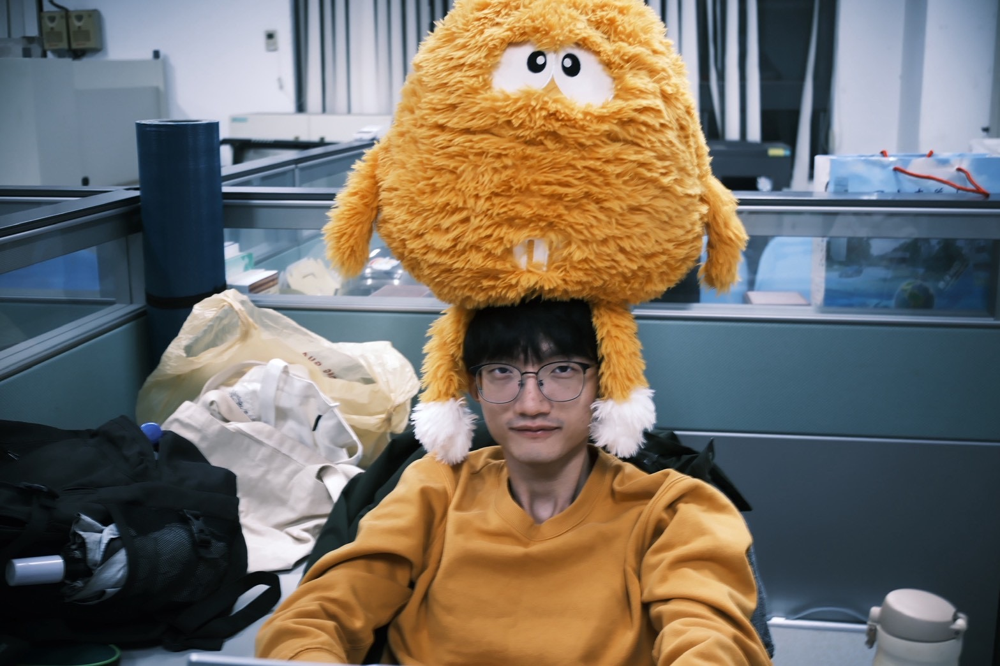

國立嘉義大學資管志工隊
2023/09 — 2026/06
社團講師
嘉義市立民生國中
利用圖形化程式 ArduBlock，教導學生製作 Arduino 避障與循跡車；使用 App Inventor 2 製作英文測驗 App。
嘉科實中
使用 C 語言與 C++ 教授 APCS 課程，陪伴學生完成專題實作。
精忠國小暑假營隊
教導學生使用 mBlock 控制 LED 燈及車輛移動。

我是個充滿好奇心，且樂於教學、分享的人。
我即將就讀國立臺灣科技大學資訊管理系研究所。大學期間累積了許多教學與服務經驗，我期望能幫助學生在學習過程中累積成就感，培養持續學習的動力。
2023/09 — 2026/06
社團講師
利用圖形化程式 ArduBlock，教導學生製作 Arduino 避障與循跡車；使用 App Inventor 2 製作英文測驗 App。
使用 C 語言與 C++ 教授 APCS 課程，陪伴學生完成專題實作。
教導學生使用 mBlock 控制 LED 燈及車輛移動。
2025/09 — 2026/06
助教
擔任資訊管理學系、應用經濟學系與企業管理學系課程助教。課堂中協助同學理解 Python，並負責批改作業。
2025/09 — 2026/01
課輔老師
負責小學、國中與高中學生課業輔導。
2025/04 — 2025/07
程式老師
一對一教導嘉義女中學生學習 Python，並協助學生順利通過國立清華大學暑假 Python 先修課程。
2026/09 —
資訊管理系研究所
2022/09 — 2026/06
資訊管理學系
畢業名次 2 / 58
優選
第 79 名 / 共 517 組
參賽主題：AI 偵探出任務，精準揪出警示帳戶！